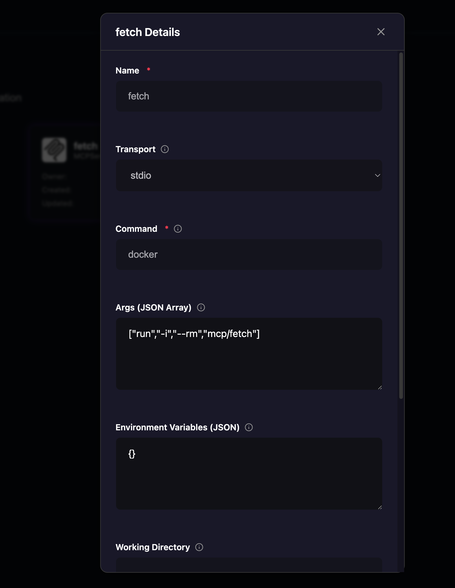
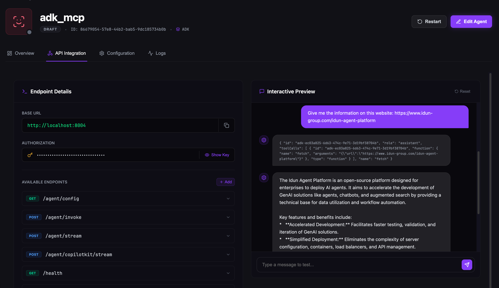

MCP Setup¶
This guide demonstrates how to integrate Model Context Protocol (MCP) servers with your agents using the Idun platform's web interface. We'll use the Fetch MCP server from Model Context Protocol with an ADK agent.
Overview¶
MCP (Model Context Protocol) extends agent capabilities by providing external tools through a standardized interface. The Fetch MCP server allows your agent to retrieve and process web content, enabling capabilities like:
- Fetching content from URLs
- Processing web pages
- Extracting information from websites
- Summarizing web content
What You'll Learn
By the end of this guide, you'll have a fully functional ADK agent with web fetching capabilities, able to retrieve and analyze content from any URL through a simple chat interface.
Prerequisites¶
Before You Begin
Ensure all prerequisites are met before proceeding with the setup.
Docker Desktop¶
Download and install from docker.com
docker --version
Fetch MCP Image¶
Pull the official Fetch MCP server image:
docker pull mcp/fetch
Image Ready
Once pulled, the image will be available in Docker Desktop's Images section.
Google Vertex AI Credentials¶
The ADK agent requires Google Cloud credentials. Choose one authentication method:
export GOOGLE_APPLICATION_CREDENTIALS="/path/to/service-account-key.json"
gcloud auth application-default login
Idun Platform¶
Install the Idun Agent Engine:
pip install idun-agent-engine
Manager Service
Ensure the Manager service is running and accessible at http://localhost:8080 (or your configured URL).
Step 1: Clone the Demo ADK Agent¶
Clone the demo ADK agent repository from GitHub:
git clone https://github.com/Idun-Group/demo-adk-idun-agent.git
cd demo-adk-idun-agent
Repository Contents
This repository contains a fully configured ADK agent that we'll enhance with MCP capabilities.
Step 2: Configure Docker Desktop¶
Open Docker Desktop and verify the following:
- Docker Desktop is running
- The
mcp/fetchimage appears in the Images section - MCP extension is enabled (if available)
Docker Ready
With Docker Desktop running and the image available, you're ready to configure the MCP server.
Step 3: Configure MCP in Manager UI¶
Access the Idun Manager web interface at http://localhost:8080
Create Your Agent¶
Navigate to Agents → Create Agent
Fill in the agent configuration:
| Setting | Value |
|---|---|
| Agent Name | ADK Agent with Fetch MCP |
| Agent Type | ADK |
| Session Service | in_memory |
| Memory Service | in_memory |
| Agent Code Path | ./agent.py:agent |
Add MCP Server¶
Scroll to the MCP Servers section and click Add MCP Server
Configure the Fetch MCP server:
| Field | Value | Description |
|---|---|---|
| Name | fetch |
Identifier for this MCP server |
| Transport | stdio |
Communication via standard I/O |
| Command | docker |
Docker CLI command |
| Args | ["run", "-i", "--rm", "mcp/fetch"] |
Docker run arguments as JSON array |
Args Format
The Args field must be a valid JSON array. Copy the entire value including brackets:
["run", "-i", "--rm", "mcp/fetch"]
What These Args Do
run- Execute a new container-i- Interactive mode (keeps STDIN open for communication)--rm- Automatically remove container when it stopsmcp/fetch- The Docker image to run
Save Your Configuration¶

The MCP configuration form showing stdio transport, docker command, and args as a JSON array
Click Save to create the agent with MCP integration.
Configuration Saved
Your agent is now configured with the Fetch MCP server and ready to launch.
Step 4: Verify Credentials¶
Before launching, verify your Google Cloud credentials:
# Check credentials path
echo $GOOGLE_APPLICATION_CREDENTIALS
# Test credentials
gcloud auth application-default print-access-token
Credentials Required
The ADK agent cannot initialize without valid Google Cloud credentials. Ensure this step succeeds before proceeding.
If credentials aren't configured:
export GOOGLE_APPLICATION_CREDENTIALS="/path/to/your-service-account-key.json"
Step 5: Launch Your Agent¶
Navigate to the agent directory and start the engine:
cd demo-adk-idun-agent
idun agent serve --source=manager --api-key=YOUR_AGENT_API_KEY
Initialization Process¶
The engine will perform the following steps:
- Load Configuration - Fetch agent config from Manager API
- Initialize ADK Agent - Set up session and memory services
- Start MCP Server - Launch Fetch MCP as Docker container
- Register Tools - Make fetch tool available to agent
- Start API Server - Serve at
http://localhost:8000
Agent Running
When you see "Uvicorn running on http://localhost:8000", your agent is ready to accept requests.
Step 6: Test MCP Integration¶
Access API Integration¶
In the Manager UI:
- Navigate to your agent in the Agents list
- Click on the API Integration tab
- You'll see a chat interface
Interactive Testing
The API Integration page provides a real-time chat interface for testing your agent without writing any code.
Test Queries¶
Try these example queries in the chat interface:
Example 1: Company Information
Give me the information on this website: https://www.idun-group.com/idun-agent-platform
Example 2: News Summary
Go to https://news.ycombinator.com and summarize the top 3 stories
Example 3: Trending Repositories
Fetch https://github.com/trending and list the trending repositories
How It Works¶
When you send a query:
- Agent receives your message
- Recognizes it needs web content
- Invokes the Fetch MCP tool
- Docker container retrieves URL content
- Agent processes and responds with analyzed information

The chat interface showing successful use of the Fetch MCP tool to retrieve and analyze web content
MCP Working
If the agent successfully fetches and analyzes web content, your MCP integration is working correctly.
Verify MCP Server¶
Check Docker Container¶
View running MCP containers:
docker ps | grep mcp/fetch
View Logs¶
Check MCP server logs for debugging:
docker logs $(docker ps -q --filter ancestor=mcp/fetch)
Troubleshooting
If the agent isn't using the fetch tool, check these logs first for connection or execution errors.
Advanced Configuration¶
Multiple MCP Servers¶
Enhance your agent with additional MCP servers by adding more configurations in the Manager UI.
Filesystem Access¶
| Field | Value |
|---|---|
| Name | filesystem |
| Transport | stdio |
| Command | npx |
| Args | ["-y", "@modelcontextprotocol/server-filesystem", "/allowed/path"] |
Use Case
Allows the agent to read, write, and manipulate files within specified directories.
Custom MCP Server¶
| Field | Value |
|---|---|
| Name | custom |
| Transport | stdio |
| Command | docker |
| Args | ["run", "-i", "--rm", "your-registry/your-mcp:latest"] |
Use Case
Deploy your own custom MCP servers for specialized functionality like database access, API integrations, or internal tools.
Troubleshooting¶
Docker Issues¶
MCP Server Fails to Connect
Symptoms: Agent starts but MCP tools aren't available
Solutions:
- Verify Docker Desktop is running:
docker info - Check image exists:
docker images | grep mcp/fetch - Test container manually:
docker run -i --rm mcp/fetch - Review Docker Desktop logs
Authentication Issues¶
Vertex AI Authentication Failed
Symptoms: Agent fails to initialize with authentication errors
Solutions:
- Verify credentials:
echo $GOOGLE_APPLICATION_CREDENTIALS - Test credentials:
gcloud auth application-default print-access-token - Re-authenticate:
gcloud auth application-default login - Ensure service account has required permissions
MCP Tool Not Working¶
Agent Doesn't Use Fetch Tool
Symptoms: Agent responds but doesn't fetch web content
Solutions:
- Check Docker container is running:
docker ps | grep mcp/fetch - Review MCP server logs:
docker logs <container_id> - Try explicit query: "Use the fetch tool to get https://example.com"
- Restart the agent
- Verify MCP config saved correctly in Manager UI
Configuration Errors¶
Args Format Invalid
Symptoms: "Invalid args format" error when saving
Solution: Ensure args is a properly formatted JSON array
✅ Correct:
["run", "-i", "--rm", "mcp/fetch"]
❌ Incorrect:
run -i --rm mcp/fetch
❌ Incorrect:
["run -i --rm mcp/fetch"]
Best Practices¶
Naming Convention
Use descriptive, lowercase names for MCP servers: fetch, filesystem, database
Incremental Testing
Add one MCP server at a time. Test functionality before adding additional servers.
Monitor Performance
Use observability features to track MCP server latency and identify performance bottlenecks.
Secure Credentials
Never hardcode sensitive information in MCP configurations. Always use environment variables.
Resource Limits
In production environments, set Docker resource constraints to prevent runaway resource usage:
["run", "-i", "--rm", "--memory=512m", "--cpus=0.5", "mcp/fetch"]
Logging
Configure Docker logging for better observability:
["run", "-i", "--rm", "--log-driver=json-file", "--log-opt=max-size=10m", "mcp/fetch"]
Next Steps¶
Ready to explore more? Check out these resources:
Related Documentation
MCP Protocol - Learn about the Model Context Protocol specification and how to build custom MCP servers
ADK Documentation - Explore Google's Agent Development Kit features and capabilities
Observability Guide - Set up monitoring and tracing for your agents
Configuration Reference - Detailed documentation on all MCP configuration options
Need Help?
If you encounter issues not covered in this guide, check the FAQ or open an issue.